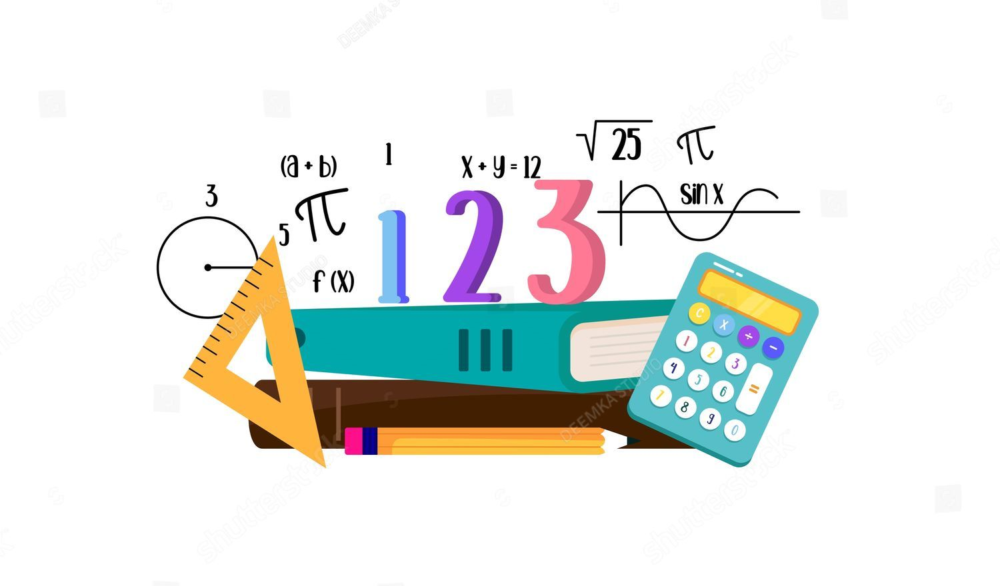

INTRODUCCIÓN
Les vamos a presentar nuestro tema a tratar para esta tematica y enseñanza de esta no se preocupen le haremos entender de la manera mas sencilla posible.
El Teorema de Pitágoras es uno de los principios más conocidos y fundamentales en la geometría. Este teorema lleva el nombre del antiguo matemático griego Pitágoras, aunque existen evidencias de que era conocido por otras civilizaciones antes de él, como los babilonios e indios. El teorema establece una relación específica en los triángulos rectángulos, es decir, aquellos triángulos que tienen un ángulo recto (de 90 grados).

La formulación matemática del Teorema de Pitágoras es sencilla pero poderosa: en un triángulo rectángulo, el cuadrado de la longitud de la hipotenusa (el lado opuesto al ángulo recto) es igual a la suma de los cuadrados de las longitudes de los otros dos lados. En términos algebraicos, si un triángulo rectángulo tiene lados de longitud \( a \) y \( b \), y la hipotenusa tiene longitud \( c \), entonces la relación se expresa como:
\[ c^2 = a^2 + b^2 \]
Este teorema no solo es fundamental en la geometría, sino que también tiene aplicaciones extensivas en diversas ramas de la ciencia y la ingeniería. Por ejemplo, es crucial en el diseño arquitectónico, la navegación, la física y muchas otras áreas que requieren cálculos precisos de distancias y ángulos.

El Teorema de Pitágoras también juega un papel esencial en la educación matemática, sirviendo como una base para el estudio de la geometría euclidiana y proporcionando un marco para el desarrollo del pensamiento lógico y crítico en los estudiantes. A través de la comprensión y la aplicación de este teorema, los estudiantes aprenden a resolver problemas complejos y a apreciar la belleza y la utilidad de las matemáticas en el mundo real.
Teorema de Pitágoras
El Teorema de Pitágoras es uno de los teoremas que más
ha maravillado a todas las civilizaciones a lo largo de la historia. Algunos historiadores sugieren que en Babilonia por
el año 1600 a.C., se calculaban las diagonales de ciertas figuras utilizando este teorema, sin embargo, la primera demostración formal conocida se le otorga usualmente al filósofo matemático griego Pitágoras de Samos, considerado
el primer matemático puro. Este teorema cuenta con una
gran cantidad de demostraciones realizadas por personajes
importantes de la ciencia y la matemática a lo largo de toda
la historia.